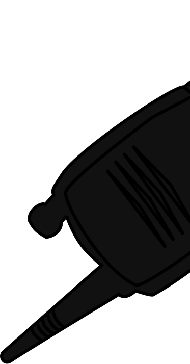
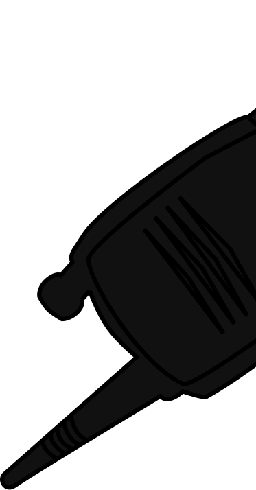

Menoe Grotesque Pro
Студия
Hungar
umlaut
Адам
Кати
Год
2014
2015
Студия
Hungar
umlaut
Адам
Кати
Год
2014
2015
История создания
Шрифт Menoe Grotesque вдохновлён старой печатной
машинкой.
Адам Кати проанализировал шрифт с засечками
в этой машине и
создал свою версию без засечек,
сохранив традиции пишущих
машинок.
Начертания
(2 штуки)
Regular
Italic

ULITRA MARKER
blue

Адам Кати
Режиссёр
 

Turbosky
Hungar
umlaut
--->
rent
Глифы
§
"
&
^
¤
#
~
%
@
>
¿
÷
*
$
Лигатуры
fi
Þ
î
ђ
ẞ
ѳ
ќ
Љ
ť
Ŧ
Ŝ
ſ
ě
œ

DC 0UT 12V
Дроби
shutter
1/50
tint
-27
iso
400
18:29:035
½
¾
¼
ncard 41 min

ZOOM
Цифры
00:18:29:035
96/24 - 000
007:09:10

ª
СВЕТ:
LED-ПАНЕЛИ, LED PAR, LED BAR,
БЛАЙДЕРЫ, DMX-КОНТРОЛЕРЫ
+ ОТРАЖАТЕЛИ, РАССИВАТЕЛЬ
G21-586-7
ДЛЯ КАМЕР:
ЗУМ-ОБЪЕКТИВ
ФИКС-ОБЪЕКТИВ
МАКРООБЪЕКТИВЫ
ТИЛТ-ШИФТ ОБЪЕКТИВЫ
ШТАТИВ С ПЛОЩАДКОЙ
(2 ШТУКИ)

TOOL
3/9
G20-306-7

S/R
ПЕРЕХОДНИКИ

Hungar
umlaut
--->
rent